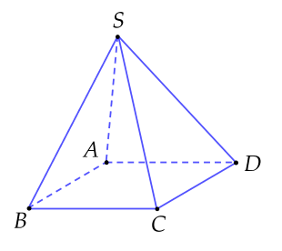

Kết quả gần nhất: 8 / 10
1. Đại số ✓ Đúng Cho hàm số $y=-x^3 - 3x^2 + 9x-1$ . Mệnh đề nào sau đây đúng?
Đã chọn: A
A) Hàm số nghịch biến trên khoảng $(-3;\,+∞).$ ✓
B) Hàm số đồng biến trên khoảng $(-3;\,1).$
C) Hàm số đồng biến trên khoảng $(1;\,+∞).$
D) Hàm số đồng biến trên khoảng $(-∞;\,-3).$
2. Đại số ✓ Đúng Hàm số $y=x^3 - 3x^2 - 1$ đạt cực trị tại các điểm nào sau đây?
Đã chọn: C
A) $x=± 2$ .
B) $x=0, \, x=1$ .
C) $x=0, \, x=2$ . ✓
D) $x=± 1$ .
3. Đại số ✓ Đúng Cho hàm số $f(x)$ liên tục trên đoạn $[0; 3]$ và có đồ thị như hình vẽ bên dưới. Gọi $M$ và $m$ lần lượt là giá trị lớn nhất và nhỏ nhất của hàm số đã cho trên đoạn $[0; 3]$ . Giá trị của $M+m$ bằng?
Gọi $M$ và $m$ lần lượt là giá trị lớn nhất và nhỏ nhất của hàm số đã cho trên đoạn $[0; 3]$ . Giá trị của $M+m$ bằng?
Gọi $M$ và $m$ lần lượt là giá trị lớn nhất và nhỏ nhất của hàm số đã cho trên đoạn $[0; 3]$ . Giá trị của $M+m$ bằng?Đã chọn: D
A) $2$ .
B) $5$ .
C) $1$ .
D) $3$ . ✓
4. Đại số ✓ Đúng Giá trị lớn nhất của hàm số $y = f\left( x \right)=\dfrac{x+1}{x+2}$ trên đoạn $\left[ 1;3 \right]$ bằng
Đã chọn: B
A) $\dfrac{6}{7}$ .
B) $\dfrac{4}{5}$ . ✓
C) $\dfrac{2}{3}$ .
D) $\dfrac{5}{6}$ .
5. Đại số ✓ Đúng Tiệm cận xiên của đồ thị hàm số $y=f(x)=x+2+\dfrac{1}{x-2}$ có phương trình là
Đã chọn: B
A) $y=x$ .
B) $y=x-2$ . ✓
C) $y=-x+2$ .
D) $y=x+2$ .
6. Đại số ✓ Đúng Đồ thị của hai hàm số sau y = x 3 + 2 × 2 + 1 và y = x 2 - x + 2 cắt nhau tại bao nhiêu điểm?
Đã chọn: D
A) 2.
B) 0.
C) 1.
D) 3. ✓
7. Đại số ✓ Đúng Đường cong ở hình dưới là đồ thị của hàm số nào?
Đã chọn: C
A) $y=-x^{3}-4 x^{2}-x+2$ .
B) $y=x^{3}+3 x^{2}+4 x+2$ .
C) $y=x^{3}+3 x^{2}-4 x+2$ . ✓
D) $y=x^{3}+x^{2}+2 x+2$ .
8. Hình họcCó vẽ hình ✓ Đúng Cho hình chóp $S.ABCD$ có đáy $ABCD$ là hình bình hành. Khi đó $\overrightarrow{SA}+\overrightarrow{BC}$ bằng

Đã chọn: C
A) $\overrightarrow{SC}$ .
B) $\overrightarrow{SB}$ .
C) $\overrightarrow{SD}$ . ✓
D) $\overrightarrow{SA}$ .
9. Hình họcKhông vẽ hình ✗ Sai Trong không gian $Oxyz$ , gọi $M'$ là hình chiếu vuông góc của điểm $M\left(2;\,3;\,-1 \right)$ trên trục $Oy$ thì tọa độ $\overrightarrow{MM'}$ là
Đã chọn: B
A) $\left(-2;\,0;\,1 \right).$ ✓
B) $\left(0;\,3;\,0 \right).$
C) $\left(3;\,0;\,0 \right).$
D) $\left(0;\,2;\,3 \right)$ .
🔍 Phân tích lỗi: Chưa chỉ ra được lỗi cụ thể
Câu này không có một phép tính tất định để đối chiếu, nên hệ thống chỉ dựa vào đề bài và lời giải đã lưu.
10. Đại số ✗ Sai Trong không gian $Oxyz$ , cho hai điểm $A(2 ; 3 ; 4)$ và $B(3 ; 0 ; 1)$ . Độ dài của vectơ $\overrightarrow{A B}$ bằng
Đã chọn: B
A) $\sqrt{19}.$ ✓
B) $\sqrt{13}.$
C) $13 .$
D) $19 .$
🔍 Phân tích lỗi: Chưa chỉ ra được lỗi cụ thể
Câu này không có một phép tính tất định để đối chiếu, nên hệ thống chỉ dựa vào đề bài và lời giải đã lưu.